死锁的定义和例子
死锁 (Deadlock) 是指，多个进程因竞争资源导致的一种僵局，即若干进程各自持有一些资源，同时等待获取另一个进程持有的资源，形成的互相等待的局面。
一个例子是，一个系统里有两个进程，分别完成从一个磁盘驱动器拷贝内容到另一个磁盘驱动器的操作，即各自需要两个磁盘驱动器。系统里两个磁盘驱动器。当前，p1持有A并希望获取B，同时p2持有B并希望获取A，这两个进程就会相互等待，陷入死锁。
semaphore first_mutex = 1;
semaphore second_mutex = 1;
thread_one() {
wait(first_mutex);
wait(second_mutex);
// ......
}
thread_two() {
wait(second_mutex);
wait(first_mutex);
// ......
}Bridge Crossing Example
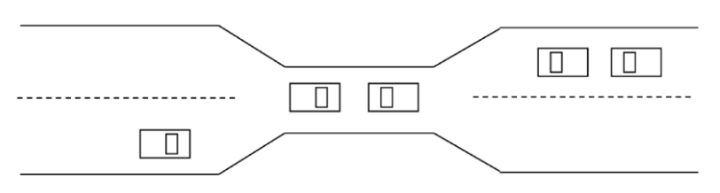
上图所示的情形也展示了一种死锁。
可以看到，如果桥上的任一辆车愿意倒车回去，就能够解决死锁。我们可以通过分配优先级的方式要求哪辆车倒车。
优先级可能导致 starvation。
系统资源分配图
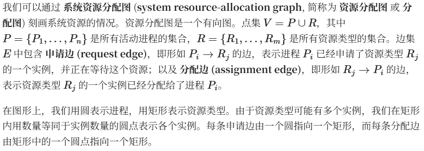
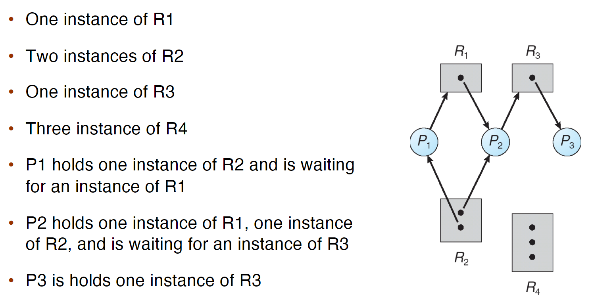
本节第一个例子的情况，可以用如下的资源分配图刻画：
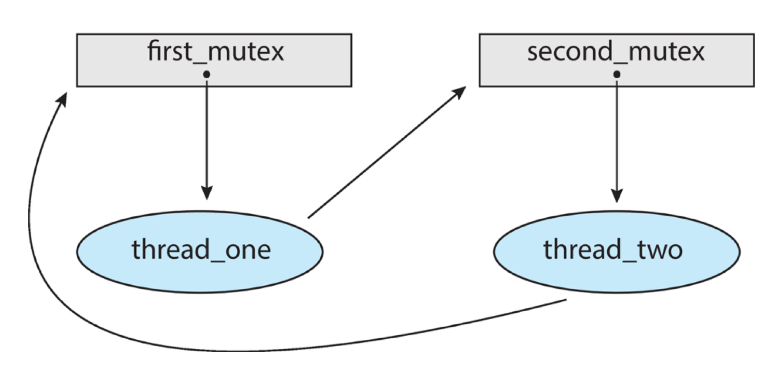
当进程申请一个资源时，应当添加一条申请边；当该申请可以得到满足时，这条申请边应当 立即 转换为分配边；当进程不再需要某个资源时，就删除对应分配边。
根据资源分配图的定义我们可以知道
- 如果资源分配图当前没有环，那么系统当前 一定 没有死锁
- 如果分配图有环，那么系统当前 可能 存在死锁。
- 但是，如果分配图有环，且每个资源类型只有 1 个实例，那么 必定 存在死锁。
分配图有环不一定存在死锁
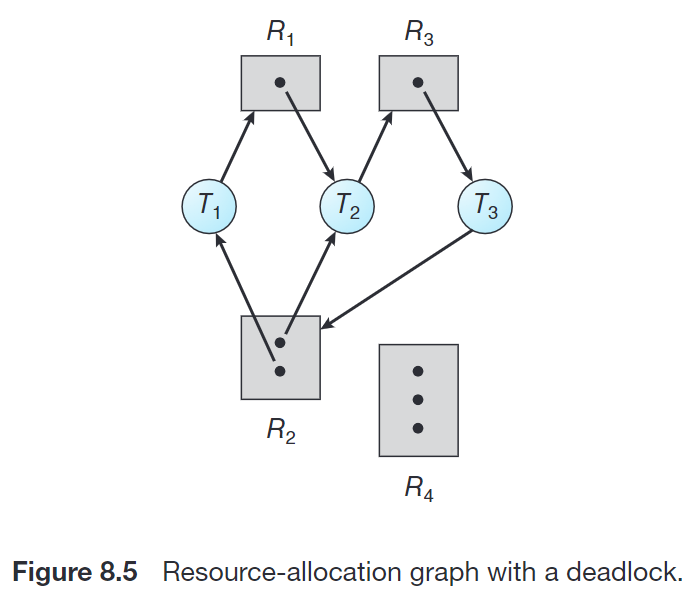[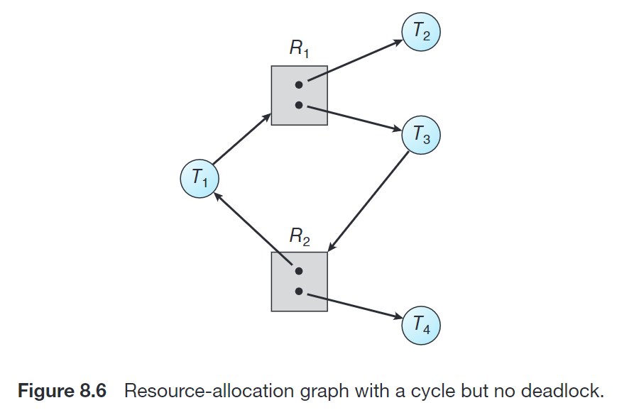
死锁的必要条件
事实上，当下面四个条件 同时 成立时，系统才会出现锁：
- Mutual exclusion : 至少一个资源处于非共享模式；
- Hold and wait : 一个进程应 占有 至少一个资源，并 等待 另一个为其他进程占有的资源；
- No preemption : 资源不能被抢占，只能在进程结束后主动释放；
- Circular wait : 我等你的筷子，你等他的，他等我的……形成一个圈[最关键]
这四个条件并不完全独立。
下图中描述了一个死锁状态：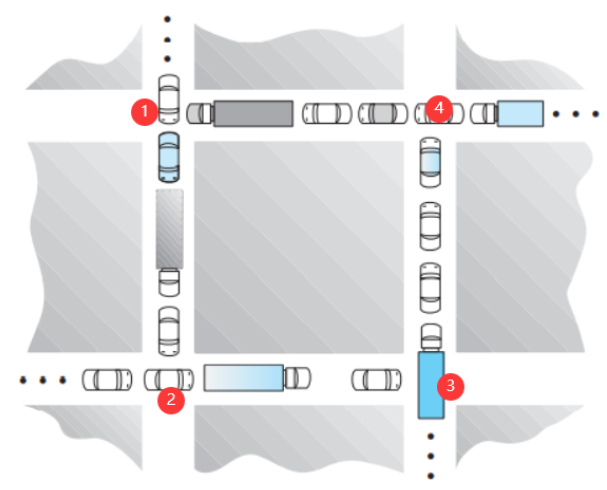
我们验证它符合上述四个条件：
- mutual exclusive：每个路口（资源） 1 ~ 4 同时只能有一辆车等待或通行
- hold and wait：位于 1, 2, 3, 4 路口的车分别持有当前路口，并且等待 2, 3, 4, 1路口的车经过
- no preemption：显然，任何一个路口边等待的车不能先于当前在路口等待的车经过路口
- circular wait：位于 1, 2, 3, 4 路口的车分别等待 2, 3, 4, 1路口的车经过
死锁的处理策略
如何处理死锁呢？有四种方法：
- 保证系统不会进入死锁状态
- 死锁预防 (deadlock prevention)
- 死锁避免 (deadlock avoidance)
- 在系统进入死锁状态后恢复
- 死锁检测和恢复 (deadlock detection and recovery)：例如数据库
- 假装系统不会发生死锁，真的发生了就寄(重启)
事实上，大多数操作系统（包括 Linux 和 Windows）选择的是最后一种方案。因此，程序员需要自己编写程序来处理死锁。但是前面三种还是要学…
死锁预防
死锁预防的核心思路是，确保至少一个必要条件永不成立，来保证系统不会出现死锁。我们分别讨论四个条件如何破坏。
Mutual Exclusion
如果保证系统资源都能共享，则该条件用不成立。
但是这只是个美好的愿望，因为有很多资源天生就不能共享，比如信号量。
Hold and Wait
保证每个进程在申请资源时不能占有其他资源。
实现方式:
- 在开始执行前申请并获得所有资源。
- 或者，只允许进程在没有资源时才能申请资源。
这种方式的问题是，资源利用率较低，而且需要资源较多的进程可能发生starvation。
No Preemption
No Preemption（不可抢占）：资源一旦给了你，除非你自愿用完，否则谁也不能让你吐出来。
当一个进程请求一个资源但是没有立刻得到满足时，它必须释放已经持有的所有资源. 直到它需求的所有资源（包括刚才释放的那些资源）都可用时才能一并获取它们并继续执行。
但是信号量之类的资源也不能这样用[主动释放也就相当于被抢占,但是信号量之间的cs是原子的不可被中断]；同时也会降低资源利用率。
Circular Wait
对所有资源类型进行排序，要求每个进程按照递增顺序申请资源。
程序员需要保证按照这个顺序申请资源，也就是说如果程序员不听话，还是会发生死锁。这种方法也可能影响资源利用率。
死锁避免
避免死锁需要一些额外信息，例如进程未来需要使用哪些资源、资源的使用顺序等。在每次请求到来时，即使对应资源可用，系统也应该结合现有可用资源、现有已分配资源以及各个进程未来申请和释放的资源，考虑是否让这个请求等待从而避免未来可能的死锁。
不同模型可能对上述额外信息有不同的需求。最简单且最有用的模型维护这样的 资源分配状态 (resource allocation state):
- 每个进程声明可能对每种资源类型的 最大需求 (maximum demands)
- 当前系统的 available 和 allocated 的资源数目。
资源分配图算法
这种算法适用于每种资源类型只有 1 个实例的情况。
我们在资源分配图的基础上增加一种边，叫 claim edge，表示某个进程未来 可能 会需求某种资源，用虚线表示。
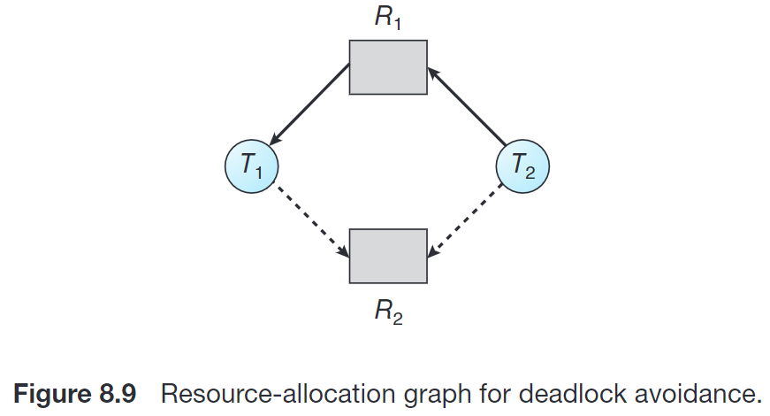
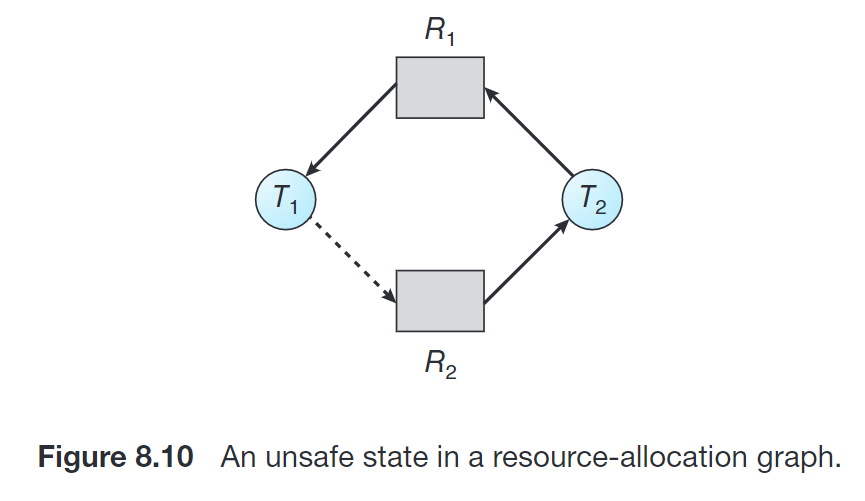
- 当这个需求真的出现的时候，claim edge 转为 request edge； 虚线变需求线
- 当需求被满足的时候，request edge 转为 assignment edge；需求线变分配线
- 当该进程释放该资源时，assignment edge 转为 claim edge。分配线变回虚线
当一个需求来了的时候，如果 request edge 转为 assignment edge 不会导致图中有一个 cycle，则该要求可以被满足；否则该请求应当等待。
安全状态 | Safe State
如果系统能够按照一定顺序为每个进程分配资源，同时避免死锁，那么系统就处在 安全状态 (safe state)。
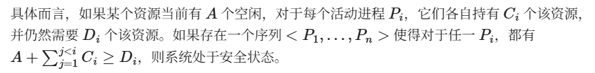
银行剩下的钱+前面所有人完成之后还给银行的钱,是否能满足自己的需求
安全状态保证不发生死锁。
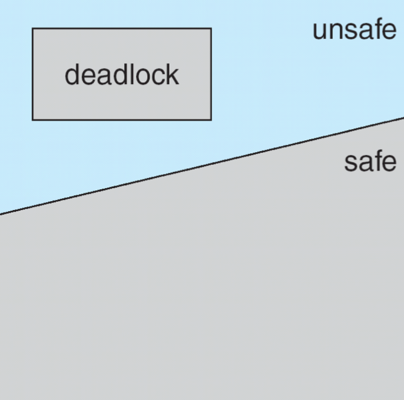
Example
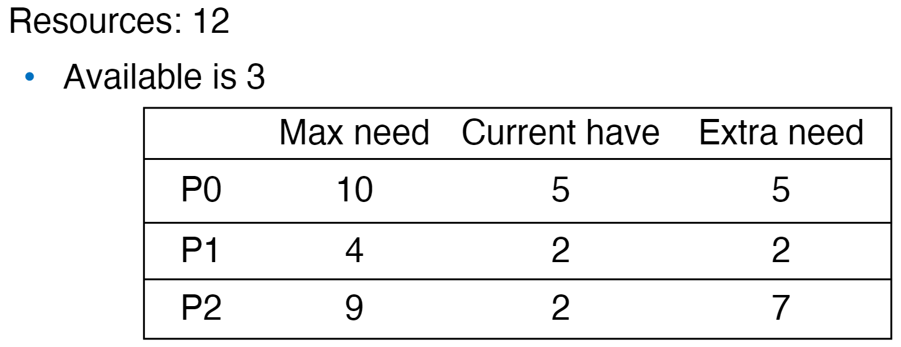
102是一个 safe sequence。因此系统处在安全状态。
就是一开始 只能满足p1的need 然后p1运行完了之后,还了4,3-2+4=5 然后给0跑.类似的..
根据这一概念，我们可以这样定义死锁避免的算法：起初，系统处于安全状态。当有进程申请一个可用资源时，系统应确定，如果立刻进行这一分配后系统仍处于安全状态则可以分配，否则应当让进程等待。
银行家算法 | Banker’s Algorithm
我们通过 available, max, allocation, need 这四个矩阵刻画一个时间内各个进程对各种资源的持有和需求情况，以及当前系统的资源情况；操作系统根据这些数据保持系统处于安全状态，从而决定一个需求是否应当被立即满足。
参考下面的例子中问题 1 理解，找一个安全序列的基本思路就是：选取一个 need（的每一项都对应地）小于 available（的对应项）的进程，其运行完后会将 allocation 释放回 available，以此类推。
而决定一个需求是否应当被立即满足的方案是，假设 这个需求被接受了，根据该需求更新对应的 need, available, allocation，在此状态下推演是否有合法的安全序列。如果有，则可以立即满足，否则应等待。参考下面例子中的问题 2~4。
Question
Consider the following snapshot of a system:

T表示不同的进程,ABCD表示不同类型的资源
先用max-allocation,可以得到need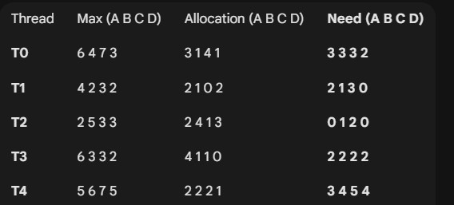
然后就先看当前的avaliable能满足哪个need,然后第一个进程运行完之后,新 Available = 原Available + T2 Allocation = 。再进行新一轮寻找!最终就可以找到一个安全序列,一般来说答案不唯一.只要存在安全序列,就说明处于安全状态
Answer the following questions using the banker’s algorithm:
- Illustrate that the system is in a safe state by demonstrating an order in which the threads may complete.
- If a request from thread T4 arrives for (2, 2, 2, 4), can the request be granted immediately?
小于等于need,小于等于avaliable.通过资格检查.
但是如果假设进行分配之后,t4并没有满足能运行的条件(没跑完,当然也就不能释放),而且剩余的也不足以支持别的进程运行,所以是不安全的
实际上就是 按照题意进行分配,然后用新的矩阵再做一次找安全序列的动作. - If a request from thread T2 ar7rives for (0, 1, 1, 0), can the request be granted immediately?
- If a request from thread T3 arrives for (2, 2, 1, 2), can the request be granted immediately?
答案
- 如图： 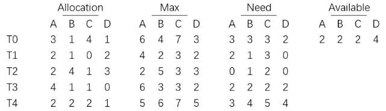
我们可以先让 T2 运行（也可以是 T3），此后变成：
[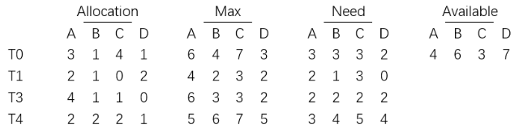
现在可以让除了 T4 以外的每个 thread 运行，后续类似。因此一个安全序列是 T2→T0→T1→T3→T4。因此当前系统是安全的。 - 如果满足这一要求，之后的状态为：
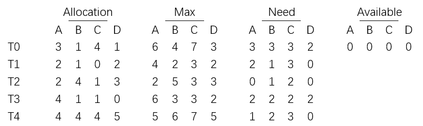
可见，此时任一线程都无法执行。因此此要求不能立即满足。 - 如果满足这一要求，之后的状态为： 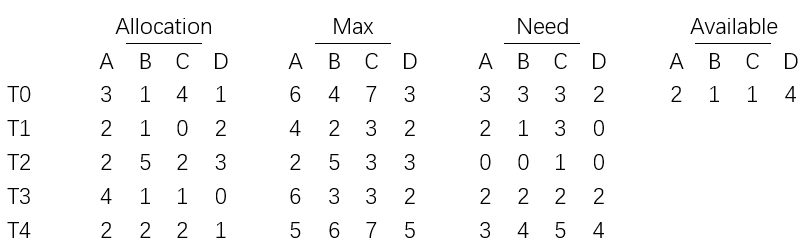
这不影响我们如 1) 那样完成全部线程的运行，即系统是安全的。因此此要求可以立即满足。 - 如果满足这一要求，之后的状态为： 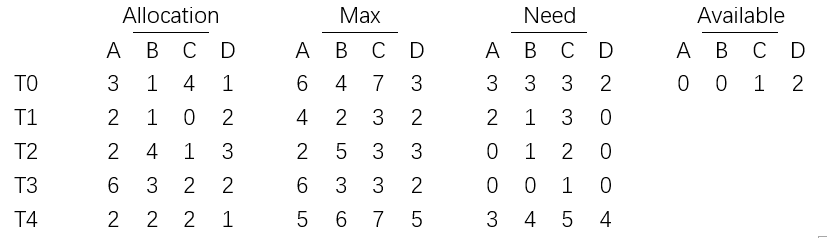
我们可以按 T3→T2→T4→T1→T0 等顺序完成全部线程的运行，即系统是安全的。因此此要求可以立即满足。
死锁检测
Single Instance Resources
可以通过资源分配图的变体 wait-for graph 来解决：
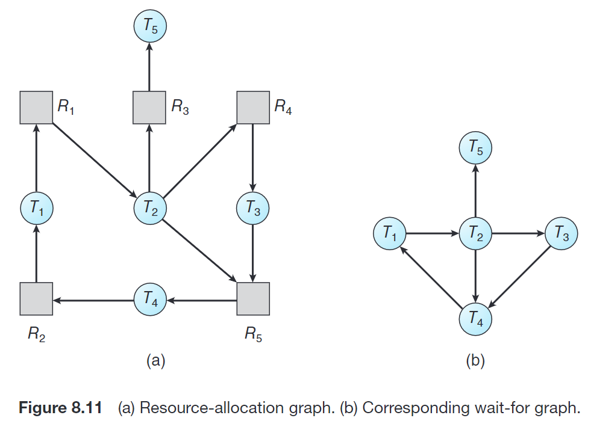
在这个图里找环，用拓扑排序的话时间复杂度是 的，这最差情况下是 的。
Multi-Instance Resources
类似银行家算法。如果找不到任何安全序列，则说明系统处于死锁状态。
死锁恢复
死锁恢复有两个选择：
进程终止 Treminate deadlocked processes
终止进程并不简单，它需要维护终止时的状态，并且有可能需要重新计算一些内容，同时还需要避免产生重复的副作用（如输出）；这需要花费很多时间。
Options:
- 放弃所有死锁进程。这样的花费会很大！
- 每次放弃一个进程，直到死锁环解除。这样的花费也很大，因为每次放弃一个进程之后都需要调用死锁检测算法。
同时后者需要考虑的是，如何选择放弃的进程？应当根据具体情况，参考如下指标选择造成的代价最小的进程来终止：
- 进程的优先级
- 已经算了多久，还要算多久
- 用了哪些、多少资源，是否容易抢占
- 还需要多少资源
- 终止这一进程的话还需要终止多少进程
- 进程是交互的还是批处理的
资源抢占 Resource preemption
不断抢占资源给其他进程用，直到消除死锁环为止。
需要考虑三个问题：
- 选择牺牲进程 (Select a victim)。抢占哪些进程的哪些资源？这和前一节的讨论差不多。
- 回滚 (Rollback)。当一个进程的若干资源被抢占，我们需要将这个进程 回滚 到某个安全状态，即回滚到申请那些被抢占的资源之前。
不过一般来说，很难确定什么是安全状态，最简单的方案就是完全回滚，也就是终止进程并重新执行。回滚到足够打断死锁的状态更加经济，但是需要系统保存更多资源。 - 饥饿 (Starvation)。如何保证不会永远从一个进程中抢占资源？在代价评价中增加回滚次数，也类似于 priority aging。